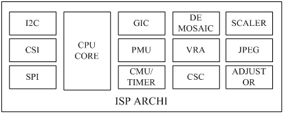
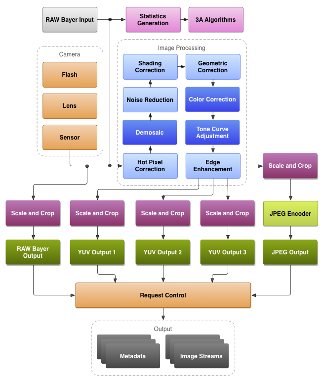
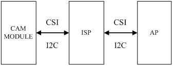
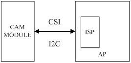

ISP(Image Signal Processor)，即图像信号处理器，用于处理图像信号传感器输出的图像信号。它在相机系统中占有核心主导的地位，是构成相机的重要设备。
主要内部构成
如下图所示，ISP 内部包含 CPU、SUP IP、IF 等设备，事实上，可以认为 ISP 是一个 SOC，可以运行各种算法程序，实时处理图像信号。

CPU
CPU 即中央处理器，可以运行 AF、LSC 等各种图像处理算法，控制外围设备。现代的 ISP 内部的 CPU 一般都是 ARM Cortex-A 系列的，例如 Cortex-A5、Cortex-A7。
SUB IP
SUB IP 是各种功能模块的通称，对图像进行各自专业的处理。常见的 SUB IP 如 DIS、CSC、VRA 等。
图像传输接口
图像传输接口主要分两种，并口 ITU 和串口 CSI。CSI 是 MIPI CSI 的简称，鉴于 MIPI CSI 的诸多优点，在手机相机领域，已经广泛使用 MIPI-CSI 接口传输图像数据和各种自定义数据。外置 ISP 一般包含 MIPI-CSIS 和 MIPI-CSIM 两个接口。内置 ISP 一般只需要 MIPI-CSIS 接口。
通用外围设备
通用外围设备指 I2C、SPI、PWM、UART、WATCHDOG 等。ISP 中包含 I2C 控制器，用于读取 OTP 信息，控制 VCM 等。对于外置 ISP，ISP 本身还是 I2C 从设备。AP 可以通过 I2C 控制 ISP 的工作模式，获取其工作状态等。
主要功能特性
ISP 作为图像处理的核心器件，拥有十分重要的功能，下图展示了 ISP 处理图像数据的基本流程。

下面针对 ISP 的主要功能特性进行下介绍。
DEMOSAIC
DEMOSAIC 是 ISP 的主要功能之一。SENSOR 的像素点上覆盖着 CFA，光线通过 CFA 后照射到像素上。CFA 由 R、G、B 三种颜色的遮光罩组成，每种遮光罩只允许一种颜色通过，因此每个像素输出的信号只包含 R、G、B 三者中的一种颜色信息。SENSOR 输出的这种数据就是 BAYER 数据，即通常所说的 RAW 数据。显而易见，RAW 数据所反映的颜色信息不是真实的颜色信息。DEMOSAIC 就是通过插值算法将将每个像素所代表的真实颜色计算出来。
FOCUS
根据光学知识，景物在传感器上成像最清晰时处于合焦平面上。通过更改 LENS 的位置，使得景物在传感器上清晰的成像，是 ISP FOCUS 功能所需要完成的任务。FOCUS 分为手动和自动两种模式。ISP 可以运行 CONTRAST AF、PDAF、LASER AF 等算法实现自动对焦。
EXPOSURE
曝光。EXPOSURE 主要影响图像的明暗程度。ISP 需要实现 AE 功能，通过控制曝光程度，使得图像亮度适宜。
WB
白平衡。白平衡与色温相关，用于衡量图像的色彩真实性和准确性。ISP需要实现 AWB 功能，力求在各种复杂场景下都能精确的还原物体本来的颜色。
LSC
用于消除图像周边和图片中心的不一致性，包含亮度和色度两方面。ISP 需要借助 OTP 中的校准数据完成 LSC 功能。
GAMMA CORRECTION
伽玛校正。传感器对光线的响应和人眼对光线的响应是不同的。伽玛校正就是使得图像看起来符合人眼的特性。
CROP/RESIZE
图像剪裁，即改变图像的尺寸。可用于输出不同分辨率的图像。
VRA
视觉识别。用于识别特定的景物，例如人脸识别，车牌识别。ISP 通过各种 VRA 算法，准确的识别特定的景物。
DRC
动态范围校正。动态范围即图像的明暗区间。DRC 可以使得暗处的景物不至于欠曝，而亮处的景物不至于过曝。ISP 需要支持 DRC 功能。
CSC
颜色空间转换。例如，ISP 会将 RGB 信号转化为 YUV 信号输出。
IS
图像稳定。IS 的主要作用是使得图像不要因为手持时轻微的抖动而模糊不清。IS 有很多种，例如 OIS、DIS、EIS。ISP 可以实现 DIS 和 EIS。
事实上，ISP 除了上面提到的主要功能外，还需要支持 DENOISE、CONTRAST、SATURATION、SHARPNESS 等调整功能。
控制方式
这里所说的控制方式是 AP 对 ISP 的操控方式。
I2C/SPI
这一般是外置 ISP 的做法。SPI 一般用于下载固件、I2C 一般用于寄存器控制。在内核的 ISP 驱动中，外置 ISP 一般是实现为 I2C 设备，然后封装成 V4L2-SUBDEV。
MEM MAP
这一般是内置 ISP 的做法。将 ISP 内部的寄存器地址空间映射到内核地址空间，
MEM SHARE
这也是内置 ISP 的做法。AP 这边分配内存，然后将内存地址传给 ISP，二者实际上共享同一块内存。因此 AP 对这段共享内存的操作会实时反馈到 ISP 端。
ISP 架构方案
上文多次提到外置 ISP 和内置 ISP，这实际上是 ISP 的架构方案。
外置 ISP 架构
外置 ISP 架构是指在 AP 外部单独布置 ISP 芯片用于图像信号处理。外置 ISP 的架构图一般如下所示：

外置 ISP 架构的优点主要有：
能够提供更优秀的图像质量
在激烈的市场竞争下，能够存活到现在的外置 ISP 生产厂商在此领域一般都有很深的造诣，积累了丰富的影像质量调试经验，能够提供比内置 ISP 更优秀的性能和效果。因此，选用优质的外置 ISP 能提供专业而且优秀的图像质量。
能够支援更丰富的设计规划
外置 ISP 的选型基本不受 AP 的影响，因此魅族可以从各个优秀 ISP 芯片供应商的众多产品中甄选最合适的器件，从而设计出更多优秀的产品。
能够实现产品的差异化
内置 ISP 是封装在 AP 内部的，是和 AP 紧密的联系在一起，如果 AP 相同，那么 ISP 也就是一样的。因此基于同样 AP 生产出来的手机，其 ISP 的性能也是一样的，可供调教的条件也是固定的，这样就不利于实现产品的差异化。而如果选择外置 ISP，那么同一颗 AP，可以搭配不同型号的 ISP，这样可以实现产品的差异化，为给用户提供更丰富和优质的产品。
外置 ISP 架构的缺点主要有：
成本价格高
外置 ISP 需要单独购买，其售价往往不菲，而且某些特殊功能还需要额外支付费用。使用外置 ISP，需要进行额外的原理图设计和 LAYOUT，需要使用额外的元器件。
开发周期长
外置 ISP 驱动的设计需要多费精力和时间。使用外置 ISP 时，AP 供应商提供的 ISP 驱动就无法使用，需要额外设计编写外置 ISP 驱动。另外，为了和 AP 进行完美的搭配，将效果最大化，也往往需要付出更多的调试精力。上文也提到，使用外置 ISP，需要进行额外的原理图设计和 LAYOUT，需要使用额外的元器件，这也是需要花费时间进行处理的。
内置 ISP 架构
内置 ISP 架构是指在 AP 内部嵌入了 ISP IP，直接使用 AP 内部的 ISP 进行图像信号处理。
内置 ISP 的架构图一般如下所示：

内置 ISP 架构的优点主要有：
能降低成本价格
内置 ISP 内嵌在 AP 内部，因此无需像外置 ISP 一样需要额外购买，且不占 PCB 空间，无需单独为其设计外围电路，这样就能节省 BOM，降低成本。鉴于大多数用户在选购手机时会将价格因素放在重要的位置，因此降低成本能有效的降低终端成品价格，有利于占领市场。
能提高产品的上市速度
内置 ISP 和 AP 紧密结合，无需进行原理图设计和 LAYOUT 设计，因此可以减小开发周期，加快产品上市的速度。
能降低开发难度
如果使用内置 ISP，那么 AP 供应商能在前期提供相关资料，驱动开发人员可以有充足的时间熟悉相关资料，而且不会存在软件版本适配问题，也不存在平台架构兼容性问题。但是，如果使用外置 ISP，那么 ISP 供应商往往都不能提供针对某个平台的代码/资料，而且一般都存在软件版本兼容问题，这就需要驱动开发人员付出额的经历和时间。
使用内置 ISP 当然也有相应的不足之处，具体见上文的分析，这里就不赘述了。
事实上，鉴于 ISP 的重要性，为了推广其 AP，提高其 AP 竞争力，现在 AP 内置的 ISP 也越来越强大，其性能足以满足手机市场的需求。再加上其一系列优点，现在使用内置 ISP 方案的手机越来越多。
结语
ISP 是相机系统中重要的组成部分，要了解相机系统，就不能不熟悉 ISP。本文从 ISP 内部构成、功能特性、操控方式等角度介绍了 ISP 的各方面知识。另外，本文还详细的分析了两种架构的 ISP 方案的优缺点，希望能有所裨益。
This is copyright.